前言
这是我第一次参加国赛，也或许是我最后一次参加数学建模比赛。
在这种赛事中，我总是充当辅助者的角色，而非团队首脑。比如这次，我除了写论文和给论文排版之外，就没有做其他什么事情了。这或许与我 敢于后退 有关吧。说真的，我觉得这种思想很不好。
感谢这次队友，同样也感谢之前所有一起参入数学建模比赛，一起熬夜合作的队友，都不容易。
摘要
本文基于一维稳态传热过程、等截面直肋导热模型、集总参数分析法等方式，研究了最优炉温曲线制定问题。
首先，借助一维稳态传热理论、等截面直肋导热模型，利用给定的回焊炉指标值（如各小温区温度、间隙、炉前炉后长度等）以及炉温曲线，经计算机拟合得到弛豫时间 $\tau_s$，直肋导热系数 $m$ 等参数，拟合出特定情况下的炉温曲线；
其次，利用单变量全局搜索方法，考虑实际工业流程中的问题，求解出焊接过程传送带速度极大值；
再次，利用带剪枝的回溯算法与贪心搜索算法，进一步得到了“升温面积”极小时的炉温曲线、各小温区温度以及传送带速度。
最后，基于之前的条件，使用 像元大小倍数相等的温度残差平方和 与 温度相等的斜率残差平方和 两种指标，进一步得出使 峰值两侧炉温曲线近似对称 的最优炉温曲线以及各项指标值。
问题 1 中
关键问题是求解焊接区域中心炉温曲线对应的 弛豫时间与等截面直肋导热系数。
针对未放入电路板的回焊炉，通过一维稳态导热过程，分析温区间隙的温度分布；
通过等截面直肋导热模型，分析回焊炉中炉前、炉后区域的温度；
最后，通过 集总参数分析法，使用表格中数据，反推出回焊炉中的空气与电子元件之间的弛豫时间 为 52.10s，炉前等截面直肋导热系数 为 0.05，炉后 为 0.017。
进而得到第 3 温区中心温度 139.15$^\circ$C，第 6 温区中心温度 183.16$^\circ$C，第 7 温区中心温度 209.04$^\circ$C，第 8 温区末尾温度 236.91$^\circ$C，以及给定条件下的炉温曲线。
问题 2 中
首先使用问题 1 中求得的参数和题目中的各温区温度，模拟题目中的炉温曲线。
此后，利用单变量全局搜索遍历速度的可能取值，在制程界限的规定条件下，求得最大传送带过炉速度 $v$ 为 69cm/min。
问题 3 中
该问存在 5 个自变量需要确定，分别是 1-5 温区、6 温区、7 温区、8-9 温区温度以及传送带运行速度。
本文给出了两种求解方法。第一种为大规模的剪枝配合回溯算法，在广度上保证所有满足可行域的解均被枚举，但又大大降低了计算复杂性。
第二种为根据本题条件优化的贪心搜索算法，每次取当前点周围 $2^5$ 个，共 32 个样本点，选取最优方向为下一次迭代起点。
综合两种方法，在 1-5 温区取 184.9793$^\circ$C，6 温区取 203.1618$^\circ$C，7 温区取 244.0947$^\circ$C，8-9 温区取 264.9755$^\circ$C，传送带速度为 91.0426 m/s 时，面积最小为 845.8592。
问题 4 中
该问将判断峰值两侧对称程度，转化为计算回流区 217$^\circ$C 到冷却区 217$^\circ$C 像元大小倍数相等的温度残差和 或 温度相等的斜率残差平方和 两种指标值。
对问题 3 给出的最优炉温曲线集，使用上述指标进行打分，归一化后比较排序。
最后得出当 1-5 温区取 183.9009$^\circ$C，6 温区取 194.9547$^\circ$C，7 温区取 240.9227$^\circ$C，8-9 温区取 262.8614$^\circ$C，传送带速度为 84.6185 m/s 时，峰值温度两侧曲线更具对称性。
关键词
一维稳态传热过程 集总参数分析法 等截面直肋导热模型 贪心算法 回溯法
问题重述
问题背景
在集成电路板等电子产品生产中，需要安装有各种电子元件的印刷电路板放置在回焊炉中，通过加热，将电子元件自动焊接到电路板上。
而回流焊（Reflow Soldering）是指利用焊膏将一或多个电子元件连接到接触垫之后，通过控制加温来熔化焊料以达到永久接合的过程。
为确保生产的电子产品质量，需要令回焊炉内部各温区保证工艺要求的温度。
目前，这方面的许多工作是通过实验测试来进行控制和调整的。
现有一回焊炉，其所在的生产车间温度保持在 25$^\circ$C。
回焊炉内置炉前炉后区域以及 11 个小温区，每个温区长为 30.5 cm 。
其中，11 个小温区又从功能上被划分为 预热区、恒温区、回流区、冷却区 4 大温区。
各温区设定的温度分别为 175$^\circ$C（小温区 1-5）、195$^\circ$C（小温区 6）、235$^\circ$C（小温区 7）、255$^\circ$C（小温区 8-9）及 25$^\circ$C（小温区10-11）
除温区外，包括炉前区域 25 cm、炉后区域 25 cm、温区间隙 5 cm 等区域均不控制温度。
回焊炉启动后，在待加工的电路板送入前，各温区将迅速升高到标定温度并保持稳定，即温区大体保持恒温状态。
此后，电路板被送至传送带中间位置。带上电路板在经回焊炉加热焊接处理时，传送带始终保持匀速。
需加工的厚度为 0.15 mm 的元件，即焊接区域，置于集成电路板之上。
被加工电子元件的中心位置设有一温度传感器，此温度传感器每隔 0.5 秒检查一次环境温度。当其温度达到 30 $^\circ$ 时开始工作，此后每间隔 0.5 秒记录一次炉温。
电路板中心的 电子元件的中心温度称作“炉温”，在焊接过程中，炉温曲线需要 遵照一定的制程界限设计。
受实际情况（如机器功耗成本、机器参数、生产率）限制，实际生产时，可以通过调节各温区的设定温度和传送带的过炉速度来控制产品质量。
在上述实验设定温度的基础上，各温区温度仅能在设定温度的 10 $^\circ$C 范围内调整；
1-5 温区温度需一致，8-9 温区温度需一致，10-11 温区温度将始终保持与室温 25 $^\circ$C 相同；
升降温速率需在 $\pm 3^\circ$C/s 范围内；
温度上升过程中处在 150$^\circ$C 到 190$^\circ$C 的时间必须在 60秒 到 120 秒之间；
峰值温度不得超出 240 $^\circ$C 到 250 $^\circ$C 之间；
超过 217 $^\circ$ C 的温度也不得超出 40 秒到 90 秒的范围；
传送带的速度也因功耗原因被限制在 65 cm/min 到 100 cm/min 之间。
问题重述
针对回焊炉温区温度、传送带速度相关的炉温曲线设计问题，本文依次解决以下四个问题：
- 建立与各温区温度、传送带速度有关的炉温曲线模型。利用给定的离散炉温曲线，确定热传导、对流传热中的各个参数。
在新条件下（温区 1-5 为 173$^\circ$C，温区 6 为 198$^\circ$C，温区 7 为 230$^\circ$C，温区 8-9 为 257 $^\circ$C，传送带速度为 78 cm/min）给出指定位置炉温，以及整个回流焊过程对应的炉温曲线，
并记录每隔0.5 s焊接区域中心的温度。 - 在新条件下（温区 1-5 为 182$^\circ$C，温区 6 为 203$^\circ$C，温区 7 为 237$^\circ$C，温区 8-9 为 254 $^\circ$C），给出满足制程界限所有要求时的最大传送带速度。
- 实际焊接过程中，焊接区域中心温度超过 217$^\circ$C 的时间应尽量缩短，峰值温度也应尽可能逼近峰值温度制程界限的最小值。
在此条件下，设定 11 个温区的温度以及传送带速度，并求出 217$^\circ$C 到峰值温度间炉温曲线的覆盖面积。 - 在满足制程界限的前提下，要求尽可能确保峰值温度两侧曲线尽可能对称，即焊接区域于 25$^\circ$C 中冷却速率与其在温区 8-9 中的升温速率大体相同。
在此条件下，给出 11 个温区的温度以及传送带速度，同时给出整个过炉过程中的所有指标值。
模型假设
由于本题来源于实际工业流程，在整个求解过程中，假设：
- 焊接区域的主要材料未知，其形状为长方体。焊接区域元件的物理参数（如密度、比热容等）恒定，不随自身温度变化而变化。
- 回焊炉中使用的气体为空气。温度达到稳定后，不同区域间空气不流通。忽略温度的改变对空气密度、比热容的影响。
- 进入回焊炉前，焊接区域温度为生产车间环境室温。炉前区域起点（回焊炉入口）与炉后区域终点（回焊炉出口）两处温度为生产车间环境室温。
- 仅考虑各温区对温区间的间隙、炉前炉后区域的热传导与热对流效应。忽略热辐射作用。
- 焊接区域与电路板的温度不影响回焊炉中各区域（包括温区、温区间隙、炉前炉后区域）温度。忽略电路板可能携带的热量，忽略电路板对温区温度作用产生的细微变化。
- 回焊炉各温区中，以传送带运动方向为轴，其法平面为等温面。
符号说明
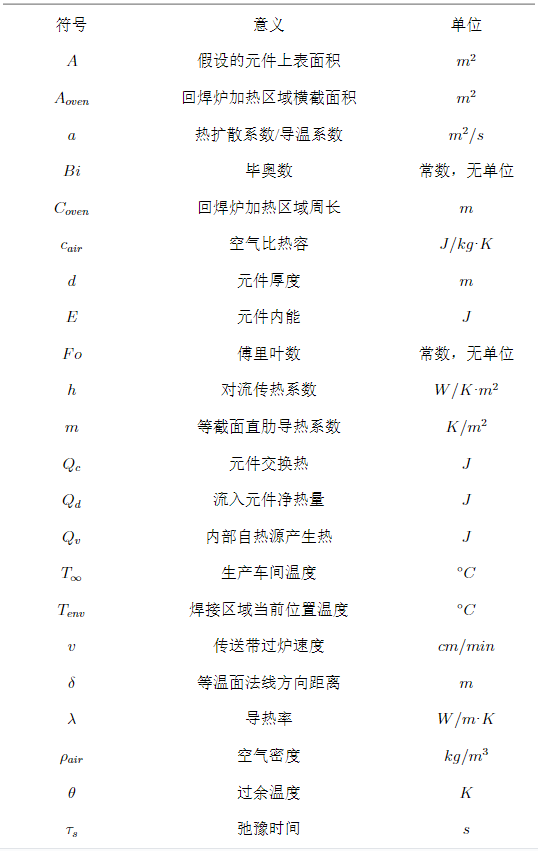
模型建立与求解
回焊炉温度模型的建立
回焊炉中，各个温区中央温度在回焊炉启动后短时间达到稳定，且不受传送带上电路板的影响。
因此，在传送带工作时，传送带上各个位置点的温度一定。
由于回焊炉各温区温度保持稳定，而温区间隙温度未加特殊控制，未控制区域温度仅受到恒温温区影响。
与此同时，电子元件若需经回焊炉加工处理，则电子元件，即焊接区域，需利用电路板为载体。
此外，回焊炉中加热过程如图所示。
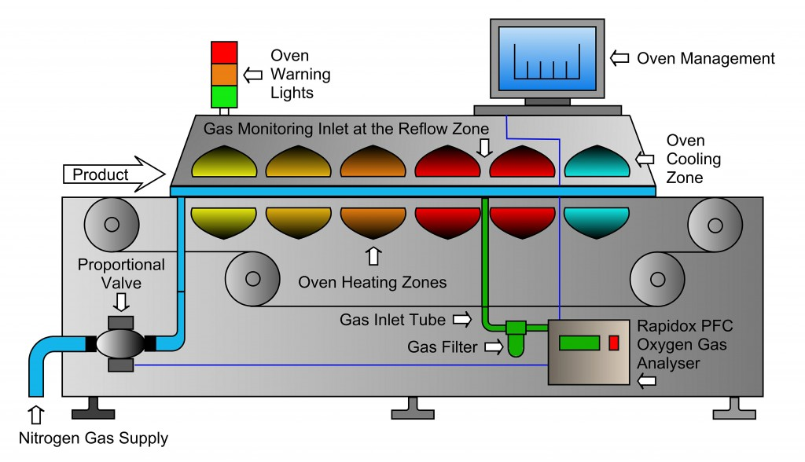
本节将回焊炉内区域划分为三部分论述：
- 温区间隙
- 炉前炉后区域
- 一般温区与特殊的小温区
温区间隙——一维稳态热传导过程
热空气通过回焊炉传送带上下的吹气装置鼓入，尽可能保证温区温度不变，同时 高速的热空气气流会阻碍温区间的相互影响。
对于 5cm 的温区间隙，由于其宽度过小，本文将对 温区间隙温度分布近似处理，仅考虑温区间隙中的热传导作用。
因此，从回焊炉启动开始，到传送带上各点温度稳定为止，此过程为 一维稳态热传导过程。
不妨以回焊炉炉前区域（传送带起点）为坐标原点，传送带运行方向为 $X$ 轴，传送带水平方向为 $Y$ 轴方向，垂直回焊炉所在平面向上方向为 $Z$ 轴方向，建立空间直角坐标系。
根据 能量守恒定律 可知，在单位时间 $t$ 内，从 $X, Y, Z$ 三轴方向仅通过导热流入单位元内部的净热量 $\Delta Q_d$ 加上单位元内部自身热源产生的热量 $\Delta Q_v$ 应与单位元内能增量 $\Delta E$，
即：
根据 傅里叶定律，在单位时间 $d\tau$ 内，在 $X$ 轴方向，有如下等式：
因此在三维方向上，单位时间内，流入单位元的净热量为：
另外两个方向的流入单位元的净热量同理可得。
忽略热传导时处在焊接区域内的电子元件密度和比热容的变化，则在单位时间 $d\tau$ 内，单位元内能增量为：
由于本题中温区温度大体保持不变，并且考察的温区间隙区域中均无热源存在，因此上式可等同于：
由热扩散系数定义 $a = \displaystyle{\frac{\lambda}{\rho c}}$，从而推出 无内热源} 情况下笛卡尔坐标系中三维非稳态导热微分方程式：
由题目及假设知，每个温区中，延热空气气流方向温度不变，同时垂直传送带运行方向温度不变。
而由于温区间隙和不同温区设定温度的不同，传送带方向的温度随 $X$ 轴坐标变化，即：
同时，由于回焊炉启动后，炉内空气温度会在短时间内达到稳定。
当电路板随传送带进入回焊炉中时，传送带上各点温度已确定。
综上，该过程为以传送带运行方向为 $X$ 轴的一维稳态热传导过程。
对于该过程，有：
由上式可得：在不考虑其他因素的一维理想条件下，未受控制区域以 区域两侧温度 $T{end}, T{begin}$、位置 $x{end}, x{begin}$ 为边界条件，微分方程的通解为线性方程：
仅考虑 一维稳态导热过程 的温度分布图像大体如图所示。
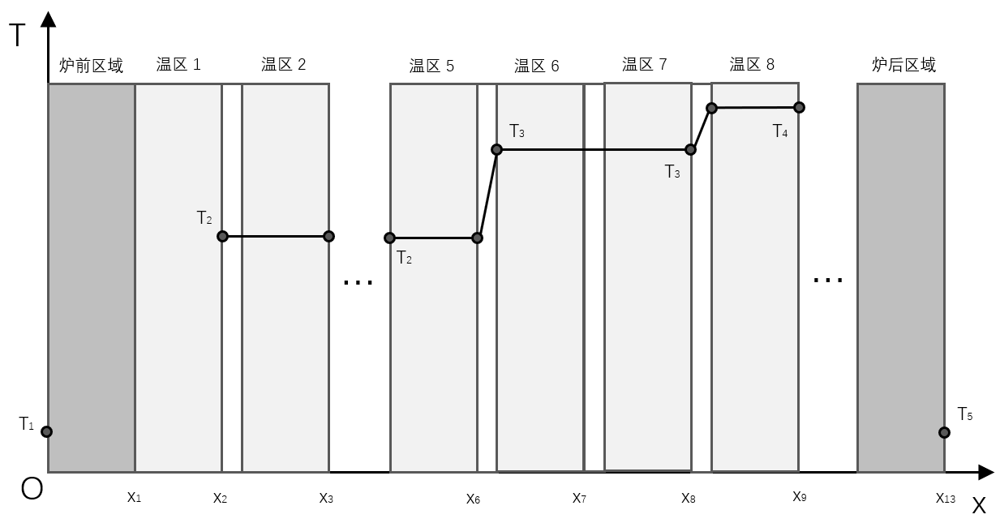
炉前炉后区域——等截面直肋导热模型
由题干知：回焊炉各温区边界附近温度也可能受相邻温区影响，同时炉前炉后区域不做特殊温度控制。
相比于温区间隙，炉前炉后区域更长，存在自然热对流，且炉前炉后区域两侧 温差极大，远大于温区间隙两侧温差。
回焊炉温区温度势必通过 热传导效应 和 自然对流换热 改变 炉前炉后区域 的原有温度分布。
故该区域温度变化分布 不可根据 一维稳态传热过程 使之近似线性分布。
如图所示，假设传送带法面均为 等温面。

例如，炉前区域在无热源条件下，会受相邻的第 1 温区热传导和对流换热影响，导致炉前区域温度呈 非线性变化。
由假设，引入回焊炉加热区域面积 $A{oven}$ 与周长 $C{oven}$，则在流入单位元内热量 $\frac{\partial Q_{inx}}{\partial x}$，对流换热热量 $Q_c$ 为：
由能量守恒定律推出的关系得知：
利用过余温度定义，方程化简为：
（注：此处 $X$ 轴原点为第 1 温区入口处，$X$ 轴方向为传送带运行的相反方向。偏微分方程边界条件为第 1 温区入口处、炉前区域入口处的环境温度 $T$ 与坐标 $x$。）
令 $m = \sqrt{\frac{hC{oven}}{\lambda A{oven}}}$，当 $x \to B_{front}$ 时，过余温度 $\theta \to 0$，此时易得：
一般温区与特殊小温区——线性与非线性分布
由题意得，各温区中心的温度在特殊的控制之下，距离 炉前炉后区域 较远的温区，其周围温区与其温差较小，很难出现外部温区影响本温区整体温度的现象。
然而由题知：各温区边界附近的温度也可能受到相邻温区温度的影响。
又由 等截面直肋导热模型，得知紧靠 炉前炉后区域 的温区会影响炉前炉后区域。
但与此同时，炉前炉后区域的较低温度也会作用于相邻温区，导致相邻温区温度难以保持在原本的 设定温度 上。
本文假设第 1 温区与第 10-11 温区受炉前炉后区域较大影响，升降温速率与 距回焊炉入口、出口距离 相关，并以此为基础构建回焊炉温度分布模型。
回焊炉空气温度曲线
在对 不同温度温区间隙 的 一维稳态热传导过程 近似处理、使用 等截面直肋导热模型 对 炉前炉后区域 建模、并综合考虑靠近回焊炉出入口对温区的影响下，利用表格中给出的数据，可模拟得到如图所示的回焊炉空气温度曲线。
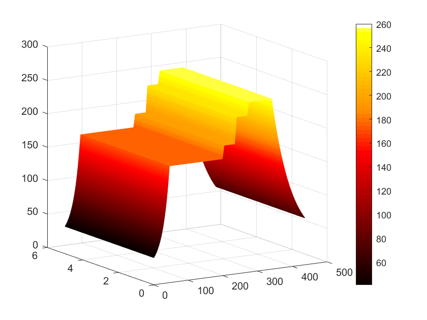
问题一的求解
问题一的求解原理——非稳态过程抽象近似法：集总参数法
本题将该元件置于电路板上，随传送带移动，传送带受置于回焊炉上下两侧的热空气气流加热。
该环境下，对于传送带上给定的某一点 $x0$，设其温度为 $T(x_0)$，同时设生产车间的温度为 $T{\infty}$。
不妨设该元件为长方体，上下表面积为 $A$，厚度为 $d$，（其中 $d << A^{\frac{1}{2}}$） 则该长方体体积为 $V = Ad$。
在传送带运行过程中，焊接区域的温度持续上升，并于 进入冷却区前达到峰值。
因此，回焊炉内热空气对焊接区域温度的影响，应该体现为一个 一维非稳态热传导过程，对此过程有:
在一维非稳态热传导方程的基础上，设过余温度
由题知，加工的焊接区域厚度 $d$ 为 $1.5 \times 10^{-4} m$。
在毫米级别下，根据假设1，将该加工原件模拟为任何种类的金属、非金属材料，下为材料热导率 $\lambda$ 表格。
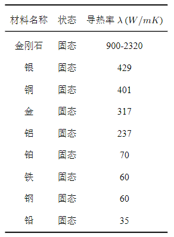
而热扩散系数与焊接区域厚度乘积的数量级远远小于热导率的数量级。
因此，焊接区域在回焊炉中将面临以下问题：
- 物体过薄，物体内部温度变化幅度较小，物体内最高温与最低温的差值较小；
- 环境温度的改变会立即作用与物体表面，导致物体温度升高、降低较明显；
- 环境温度对物体温度的改变起主导性作用。
按照元件内部最高温与最低温差小于 5% 的要求，上述问题、条件可在数值上体现为如下不等式：
如图所示，当物体内部的导热热阻远小于其表面的换热热阻时，由于这时物体内温度梯度很小、温度相差不大，因此可认为整个物体在同一瞬时均处于同一温度之下。

这种忽略了物体内部导热热阻的简化分析方法称为 集总参数法。
这是一种对实际非稳态过程给出一种抽象和理想化的近似方法。
由题意得，回焊炉中除冷却区外的各温区、间隙温度 $T(x)$ 应大于生产车间环境温度 $T_\infty$。
由于本题中始终使用热空气加热元件，且焊接区域材质不发生改变，空气-元件间对流换热系数 $h$ 不变，在任意时刻 $t$，表面热流量交换量 $Q_c$ 均可表示为：
又因为焊接区域厚度较小，内能改变量 $\Delta E$ 与区域表面热流量交换量 $Q_c$ 存在平衡关系，如图所示。
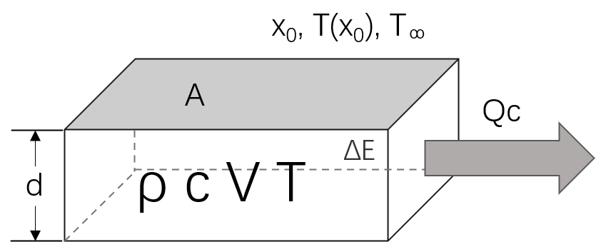
由 $\Delta E = Q_c$ 及 $\Delta E$ 与 $Q_c$ 的定义式可推得：
利用过余温度定义化简上式，得到：
通过上式以及 $V = Ad$ 变形得到：
而由于 $Bi = \displaystyle{\frac{hd}{\lambda}}, Fo = \displaystyle{\frac{a\tau}{d^2}}$，上式可化为：
由此，问题从分别求解 对流换热系数 $h$、热扩散系数 $a$、未知元件导热率 $\lambda$ 等大量参数，
转化为通过 表格中已知数据 求解指数部分除时间自变量 $\tau$ 之外的所有 不受温度影响常量的组合常数，即 $\displaystyle{\frac{\tau}{Bi·Fo}}$。
问题一求解过程
由上式以及假设可知，等式右侧 $h, A, \rho, c, V$ 均为常数。设 $\tau_s = \displaystyle{\frac{\tau}{Bi·Fo}} = \displaystyle{\frac{\rho cV}{\alpha A}}$，
又由过余温度定义，原式可简化为：
解得：$T = (Ti - T{env})e^{-\frac{\tau}{\taus}} + T{env}$
由题干得知，在回焊炉的 11 个温区中，1-5 温区、8-9 温区分别要求控制温度相同。
由于弛豫时间由 对流换热系数、热传导系数 组成，实际情况中与环境有关。
因而为获得更准确的弛豫时间常数，选取时间跨度更大、温区温度更稳定的 1-5 温区计算。
取即将进入第 2 温区的时间 $\tau{1,in} = 52.0s$，温度 $T{1,in} = 87.62^\circ$C，第 1 温区到第 5 温区设定的环境温度 $T{env} = 175^\circ$C，
离开第 5 温区的时间 $\tau{5,out} = 169.5s$，温度 $T_{5,out} = 166.74^\circ$C。
将上述数据代入：
解得：$\tau_s \approx 52.10$。
由等式两端可知：
- $\tau_s$ 越小，则元件温度随环境温度变化越迅速；
- $\tau_s$ 越大，则元件温度随环境温度变化越缓慢；
将求得的弛豫时间 $\tau_s$ 代入上式中，依次求得表格中对应时间的温度，结果如图所示。
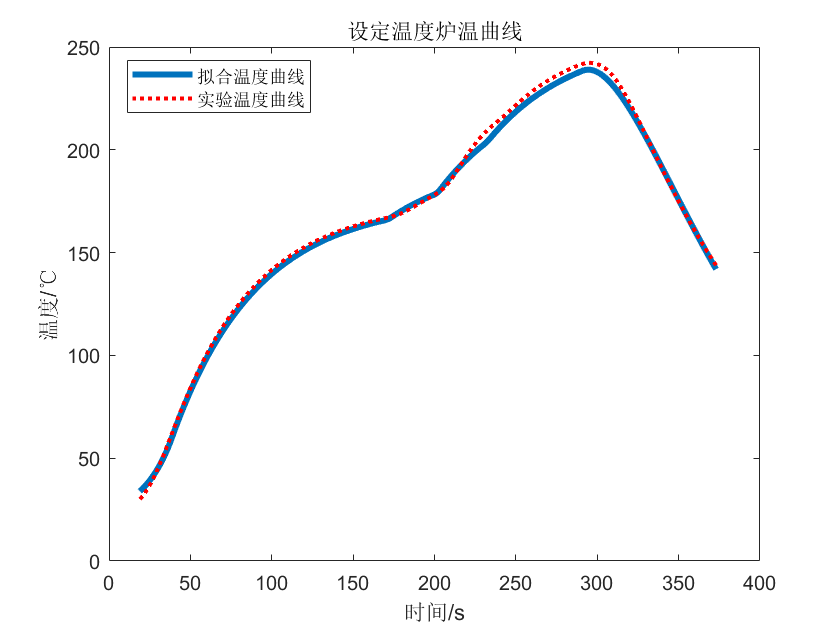

此后根据问题 1 中给出的各温区温度，代入模型中，可求得如上图所示的炉温曲线。
其中小温区3、6、7中点及小温区8结束处焊接区域中心的温度为：
（注：此处使用函数直接计算，故精度较高。后续有关炉温数值均仅保留至 2~4 位小数。）
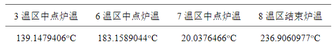
问题二的算法与求解
问题二的求解方法——单变量全局搜索
本题传送带过炉速度 $v \in [65, 100]$ cm/min，范围较小，适合使用单变量全局搜索。
根据题目中的制程界限表以及其他限制条件，搜索过程需要经过如图所示的决策过程：
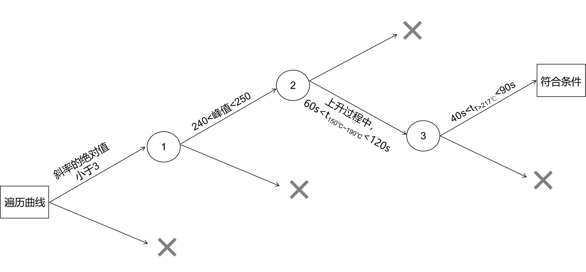
- 升降温速率小于 3$^\circ$C/s，满足则判断下一条件；
- 升温时段温度处于 $(150, 190]^\circ$C 的时间需大于 60s，小于 120s，满足则判断下一条件；
- 温度大于 217$^\circ$C 的时间应大于 40s，小于 90s，满足则判断下一条件；
- 温度最大值应大于 240$^\circ$C，小于 250$^\circ$C，满足则输出。
问题二的求解过程
根据给定的各温区温度设定值，基于本文给出的回焊炉温度模型，得到如xx所示的炉温曲线。
该模型属于离散化模型，得到的炉温曲线也为 温度-时间 / 距离 离散化曲线。
在进行单变量全局搜索时，该过程的目标函数与约束条件为：
最终，得到传送带最大过炉速度为 69cm/min。
问题三的算法与求解
问题三的分析
在给定制程界限的前提下，本小问继续添加了新的目标条件——217$^\circ$C至峰值温度曲线覆盖面积尽可能小。
由分析可知，若使该面积取得最小值，则可从两个方面考虑：
- 加热至 217$^\circ$C 以上后，回流区末尾环境温度较高，使到达峰值温度（仍在 240$^\circ$C 到 250$^\circ$C 之间）速度较快；
- 峰值温度在满足制程界限的前提下取得最低值。
前者从横坐标轴（时间 或 距离）角度考虑，在 峰值温度与 217$^\circ$C 差值一定时，通过 缩减积分上下限 减小面积。
后者从纵坐标轴（温度）角度考虑，在 焊接区域由 217$^\circ$C 加热到峰值温度所需时间一定时，通过 降低峰值温度 缩小面积。
上述角度可同时成立，即在满足所有制程界限的前提下，峰值温度取最低值，且回流区温度取最大值。
而满足上述条件，需要其他四个指标值（1-5 温区、6 温区、7 温区温度，传送带速度）的协调配合。
问题三的解决办法一：带剪枝的回溯算法
当所给的问题是从 n 个元素的集合 S 中找出满足某种性质的子集时，相应的解空间树称为子集树。\cite{subset}
常用回溯法作为搜索子集树的一般算法。
回溯法总共分为两个阶段——递入与回归，代码思路如下：
1 | BT(Layer tmp): |
根据题目给出的制程界限，可以合理地写出复杂度为常量的 $Constraint$ 函数以及 $Bound$ 函数。
本题共五个自变量，即需五层递归。自变量取值范围如下表所示。
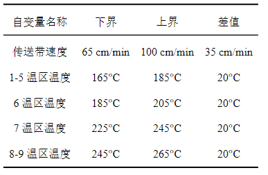
首次回溯时，自变量增量取 1 个单位。大致确定极值区间后，再对更高精度进行回溯。
该方法的优点是广度较大，最终结果准确性可以保证。但由于每次确定自变量数值后，都需要重新生成由 700 余点组成的炉温曲线，因此运行速度较慢。
问题三的解决办法二：优化的贪心搜索算法
贪心算法在每一步都做出当时看起来最佳的选择。也就是说，它总是做出局部最优的选择，寄希望这样的选择能导致全局最优解。
对本题，可借助梯度思想辅助贪心算法实现。
初始时刻通过随机函数生成一个点，计算其周围 $2^5$ 个点对应的面积值，并删去不合乎制程界限的点。
此后，选取其中面积值最小的一点为前进方向，将此点作为下一轮迭代的中心点。此后，重复上述过程，直至无法找出周围一点使得其面积值小于当前点。
则此刻，贪心算法获得了一个满足题目条件的 局部最优解。
由于本题的五个自变量已经给出，贪心算法大致思路如下所示：
1 | Greedy(): |
为消除贪心算法带来的影响，可以多次使用随机化数据作为初始指标值，多次重复完整的贪心搜索过程，直至无法找出更小面积为止。
该算法优势在于搜索速度更快，在仅存在唯一极值点的特殊情况下，贪心搜索算法得到的局部最优解就是 全局最优解。
然而贪心算法存在较大的劣势——不能稳定地输出正确结果。当指标值对面积值影响函数较为复杂时，很难通过有限次数的贪心过程获得全局最优解。
其次，本文的贪心搜索算法不能完全确保最终输出的面积值就是最小面积值。
问题三的求解过程与结果
本文使用 带剪枝的回溯算法 与 贪心搜索算法 两种方式求解问题。
经计算机模拟后，运算结果如附录 最优炉温曲线指标值表 所示。
其中最佳指标值为：
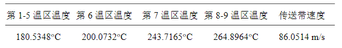
上述指标值对应面积为 853.3543。（由于曲线由离散点组成，本文采取左邻法计算离散数据积分，因此面积值存在一定程度上的误差。）
问题四的算法与求解
问题四的分析
本问要求包括上述问题的所有条件——不仅满足制程界限，炉温曲线 217$^\circ$C 到峰值温度覆盖面积最小，还需要峰值温度两侧曲线尽量对称。
为比较峰值温度两侧图像对称性，应首先统一两侧曲线的样本容量。此后，应使用能够表征对称性的指标得出最优炉温曲线及其对应指标值。
在问题 3 的求解中，分别使用 带剪枝的回溯法 以及 贪心搜索算法 给出了满足问题 3 条件的情况。
本问基于已给出的 拥有最优炉温曲线 的解集，使用数值分析方法确定最符合题目条件的解。
问题四的算法——最邻近重采样
本文根据当前问题，提出一种独特的 依靠 最邻近重采样 思想的 图像对称性 判断方法。
因此为方便计算机求解问题，需要对炉温曲线上的离散点进行重采样操作，在保证炉温曲线各处特征不变的前提下，将峰值温度两侧数据点数目统一。
重采样是指根据一类象元的信息内插出另一类象元信息的过程。最邻近法是将与该影像中距离某像元位置最近的像元值作为该像元的新值。
升温过程从 217$^\circ$C 到峰值温度的时间 $t_1$ 与降温过程中从峰值温度到 217$^\circ$C 所有时间 $t_2$ 大概率不相同。
根据第三题输出的一系列炉温曲线，记录每条炉温曲线超过 217$^\circ$C 部分的数据点。此后，选取 $t_1, t_2$ 中的较大值对应 炉温曲线段 作为 重采样的输入样本。
重采样过程中，需要以 $t_1, t_2$ 较小值对应过程的样本点个数 $n$ 为重采样输出点个数。
不妨设峰值温度对应的时间为 $t_p$，则重采样在保持数据集范围不变的前提下，像元大小为 $\displaystyle{\frac{max{t_1, t_2}}{n}}$，第 $i$ 个像元对应的横坐标值为 $t_p + sgn(t_2 - t_1) · i · \displaystyle{\frac{max{t_1, t_2}}{n}}$。
（注：该像元对应坐标值以峰值温度所在横坐标为原点。）
重采样后的 像元坐标值对应点 若原本存在，则延用原样本点；若 重采样像元所需选取的坐标值 不对应任何原样本点，根据最近邻原则，则选取 距该坐标值最近的原样本点 作代替。
问题四的解决办法一：像元大小倍数相等的温度残差和
对于一对称轴与 $X$ 轴垂直的完全对称曲线，设其对称轴与 $X$ 坐标轴交点为 $(a, 0)$，则有：
由本题所给条件知：8-9 温区中，炉温曲线单调递增；10-11 温区及炉后区域中，炉温曲线单调递减。
且炉温曲线变化率 $\frac{dT}{d\tau}$ 或者 $\frac{dT}{dx}$ 与焊接区域中心温度 $T$、焊接区域所处环境温度 $T_{env}$ 相关。
而炉温在 同一大温区内温度变化幅度较小，因此不存在大温区内变化率突变情况。
综上所述，在题目条件与假设前提下，残差和仍可作为表征炉温曲线对称性的指标。
但对非完全对称曲线，$c$ 不恒为 0，问题转化为求解下述问题：
问题四的解决办法二：温度对称的斜率残差平方和
对于一对称轴与 $X$ 轴垂直的完全对称曲线，设其对称轴与 $X$ 坐标轴交点为 $(a, 0)$，样本点 $(x0, y_0)$ 处斜率为 $k{x0}$则有：
（注：$k{a - \Delta x}, k_{a + \Delta x}$ 在该题条件下正负性恒不同。）
重采样时以长度为采样标准，将峰值温度两侧样本点斜率统一记录。此后，以峰值温度为起点，依次取像元大小倍数上的样本点斜率，计算指标 $c_{res}$，其中：
问题四的求解过程与结果
在问题 3 的基础上，使用给出的最优炉温曲线，并在其中挑选最符合本问题要求的图像。
本文使用了 像元大小倍数相等的温度残差和 与 温度对称的斜率残差平方和 两种指标表示炉温曲线峰值温度两侧图像的对称性。
经计算机模拟，运算结果归一化后，比较评价指标值。进而得到最优指标值，以及对应指标值的最优炉温曲线。
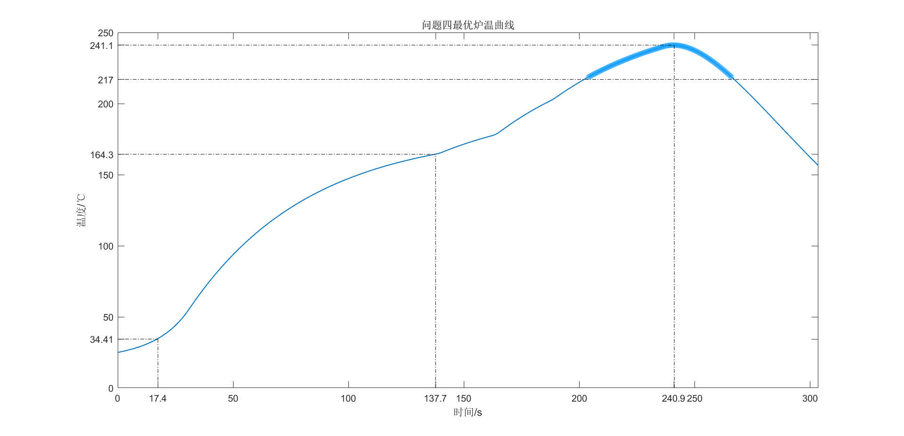
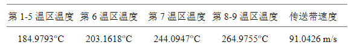
模型的评价与改进
模型优点
- 使用一维稳态热传导过程，模拟温区间隙温度分布，大大降低了后续过程的计算量。
- 使用等截面直肋导热模型，模拟炉前炉后区域与首末温区温度，更加贴合实际情况，在曲线拟合时有更好的表现。
- 使用回溯法时，通过合理剪枝，大大减小了程序的时间复杂度。
模型缺点
- 相较于实际情况，本文建立的模型为离散化模型，使导数与积分相关的计算结果存在误差，精确度也不尽人意。
- 本文建立的模型忽略了回焊炉对车间温度的影响，也忽略了传送带、带上电路板对回焊炉温度的影响。
- 温区之间本应存在更复杂的热传递、热对流以及热辐射效应，且各个方向对焊接区域存在不均匀的加热，本文提出的模型较为理想，与现实情况仍有差距。
参考文献与引用
- 回流焊接-维基百科 https://zh.wikipedia.org/wiki/%E5%9B%9E%E6%B5%81%E7%84%8A%E6%8E%A5
- 回流焊图片 cambridge-sensotec https://www.cambridge-sensotec.co.uk/blog/2017/08/22/detecting-residual-oxygen-within-solder-reflow/
- 传热学 科学出版社，北京，2016 徐尚龙
- 热导率-百度百科 https://baike.baidu.com/item/%E7%83%AD%E5%AF%BC%E7%8E%87/868266?fr=aladdin
- 传热学 机械工业出版社，北京，2009 王保国 刘淑艳 王新泉 朱俊强
- 传热学 科学出版社，北京，2009 张靖周 常海萍
- 计算机算法设计与分析 中国工信出版集团，电子工业出版社，北京，2018 王晓东
- 算法导论 机械工业出版社，北京，2013 Thomas H.Cormen Charles E.Leiserson Ronald L.Rivest Clifford Stein
- 重采样-百度百科 https://baike.baidu.com/item/%E9%87%8D%E9%87%87%E6%A0%B7/4949402?fr=aladdin